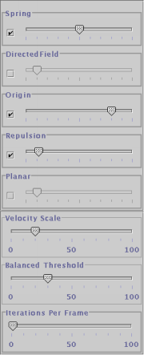

Back to contents page
Forces
It is possible to adjust the forces affecting the layout of the graph by
clicking on the "Adjust Forces" button in the toolbar.

When you select this button the following controls will appear in a new window:

The check box on the left allows you to disable a force completely while
the slider on the right allows you to adjust the strength of the force.
The forces are as follows:
- Spring: the "Springiness" of the edges
- Repulsion: the repulsive force between nodes
- Origin: a force drawing all nodes towards the origin, or centre of
the graph. This helps to keep disconnected graph elements from flying
off into space never to be seen again.
- Directed Field: a "Magnetic Force Field" which causes directed edges
to be alligned with the field. This is useful when you have a tree
like graph... the root of the tree will float to the top and the leaves will
hang down.
- Planar: A force which squashes everything into a plane.
Each cluster has its own force model. You can adjust the forces inside
a cluster by right clicking on the cluster and choosing the "Adjust Forces"
option. A window with controls similar to those above will appear.
Note that inside a cluster the Origin force attracts nodes to the center
of the cluster, giving the cluster a more "Cohesive" look.
Back to contents
page